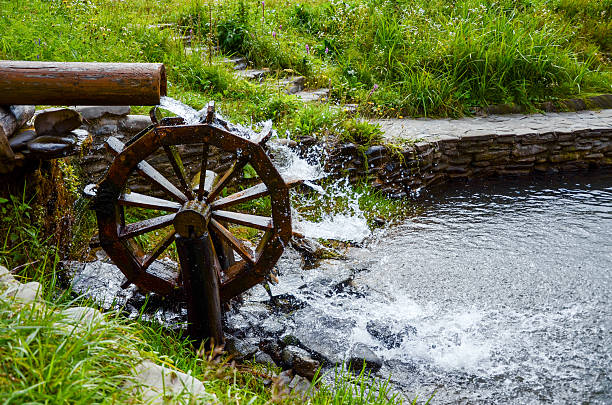
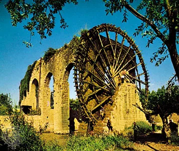
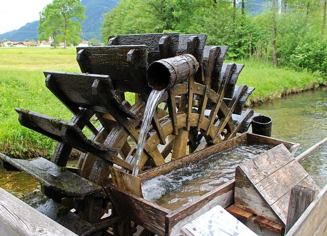
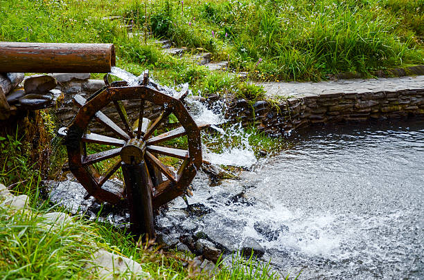
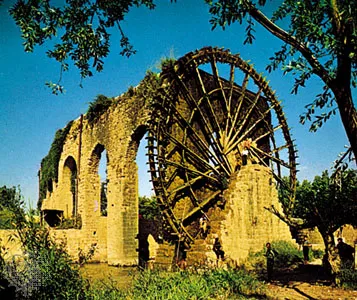
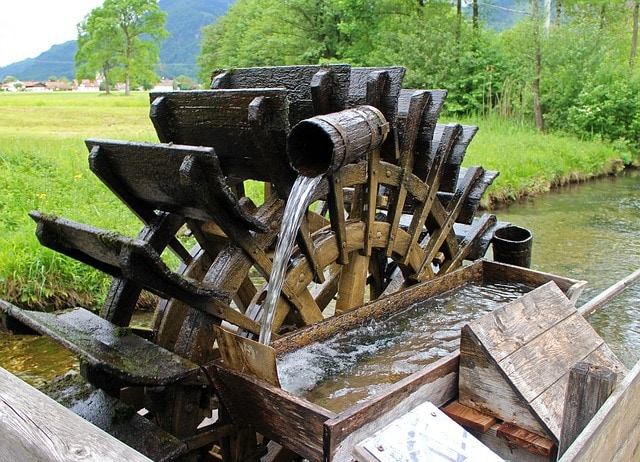

We currently use water power, but we also used water power in the past in many ways you might not expect.
To see the text, hover over the titles.
Egypt
toys_fanEgyptians used water wheels as early as 2500 BCE. These aren't the water wheels and turbines we might use nowadays, instead, they used wooden water wheels to harness the currents to move objects around.
The Romans
toys_fanEven the Romans used water power in the 1st century BCE. However, if we jump forward to the 1800s, people used water power to power mills.
Mills
toys_fanThe wheel gets spun by water, spinning another wheel like gears. Finally, it reaches the place the mill was made to power.
In conclusion, water power is not only used today but was also used in the past.
 




